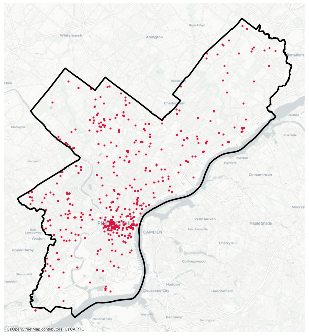
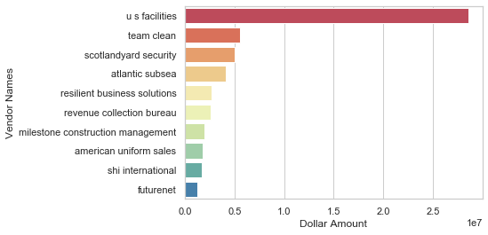
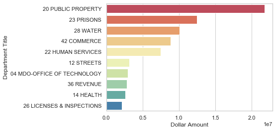

Overview
In 2019, for the first time since the goal was established five years ago, Philadelphia exceeded 35 percent participation of minority-, women-, and disabled-owned businesses (M/W/DSBEs) on City contracts. Philadelphia’s diversity is one of the key drivers behind the city’s recent achievements. The city’s diverse population is an invaluable asset that strengthens the economy and presents unique opportunities for all. The success of diverse local businesses is innately linked to the overall success of Philadelphia’s economy. Here, we are going to discuss how we have gathered and prepared data and what we have found.
Goal: Build out interactive dashboard and map highlighting major trends around geographic location, payment amounts, certification type, etc.
The Data
- Registry: all registered MWDSBE
- License: Commercial Activity Licenses. Information includes license information such as license number, activeness, etc.
- State License: list of sales tax licenses, exemption and wholesaler certificates as maintained by the Department of Revenue (DOR) that are active
- Payments: includes checks and ACH (direct deposit) payments made by the City during 2017 fiscal year
- Professional Services: Professional Services Contracts by fiscal quarter from 2013 to 2019
Unfortunately, the provided data do not listen to each other, which causes major problem to combine all data into one for analysis. We are interested MWDSBE by neighborhoods, certification types, and payments by the city, etc. In order to achieve these, we:
- Downloaded the registry data provided by Office of Economic Opportunity (OEO)
- Geocoded the businesses: added latitude/longitude to each business
- Matched this registry against other publicly available dataset, based on vendor name
Across all of the datasets, we’ve matched about 60% of the companies in the registry
Analysis of Registered Businesses
Below analysis is done only with the registry and payments data to see the overview of our final dashbroad. The final dashbroad will be similar but contain more information such as demographics, entire payments of all year, etc.
- Where are the most registered businesses located?
-
This map shows the neighborhoods with the most MWDSBE. It is suprising to see top 20 neighborhoods are the expensive areas in Philadelphia. Especially, the majority of businesses are located in Rittenhouse square, which is the most pricy neighborhood in Philadelphia. Since these are the minority businesses, we expected they are located in neighborhoods with comparatively cheap property prices.

- In-State vs Out-of-State
-
This map shows the businesses in Pennsylvania and out of Pennsylvania. In the future, we may interest in analyzing among businesses around Pannsylvania such as New Jersy and Delaware.

- In-City vs Out-of-City
-
As we can see in the map below, about 50% of MWDSBE in Pennsylvania are located in Philadephia. We are mostly interested in businesses in Philadelphia, but it would be interestesting to compare with the nearby cities as well.

- Top 10 Vendors by payments in 2017 
- Top 10 Departments by payments in 2017 
Future Directions
As mentioned earlier, we are trying to combine different data gathered by different departments using matching algorithms. We have matched about 60% of the companies in the registry and trying to get more detailed but private-access data from Office of Economic Opportunity department. After all, our interactive dashboard will contain more interesting and detailed information such as license activeness, exact payment amounts, demographic(race/ethnicity), etc.